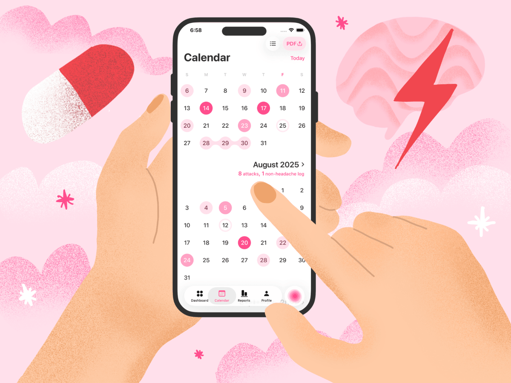

Why migraine tracking matters
Migraine is a major global health issue, affecting over 1 billion people — approximately 14–15% of the world's population. However, only a minority of people with headache disorders are appropriately diagnosed and treated by a healthcare provider. Headache disorders are underestimated, under-recognized, and under-treated.
Migraine tracking allows patients to identify precise triggers and patterns unique to their condition. This data enables doctors to tailor treatments — such as new CGRP antagonists or neuromodulation devices — more effectively, reducing trial-and-error prescribing. Ultimately, consistent tracking empowers patients to take proactive control, improving their quality of life and reducing the burden on healthcare systems.
What makes a great migraine tracker app?
A great migraine tracker app is one that seamlessly turns daily logs into clear, actionable insights without overwhelming the user.
Its importance lies in how easily it helps both patients and doctors identify patterns and tailor treatments. The best apps prioritize simplicity, speed, and clinical relevance, making consistent tracking feel effortless and genuinely useful for reducing migraine impact.
- Ease of logging during attacks
- Trigger and symptom tracking
- Medication tracking
- Reports for neurologists
- Apple Health integration
- Weather and barometric pressure analysis
- Privacy and offline support
- Subscription pricing vs. free apps
Most popular iOS Migraine Tracker Apps
Based on recent App Store data and user reviews from 2026, here are the most popular iOS migraine diary apps:
- MiG: Migraine Tracker & Diary
- Migraine Buddy
- Bearable
- Migraine Insight
Quick Comparison Table
| Feature | MiG | Migraine Buddy | Bearable | Migraine Insight |
|---|---|---|---|---|
| Primary Focus | Dedicated migraine & headache diary | Comprehensive migraine & headache tracking | General health, mood, and symptom tracker | Automated trigger identification & pattern finding |
| Key Strengths | Visual pain maps, fast logging, great calendar view, weather tracking, MIDAS and PDF reports for doctors | Detailed logging, weather/pressure tracking, community support, sharing with providers | Highly customizable, all-in-one tracking (mood, sleep, meds, etc.), Apple Health integration | Pattern finder automatically correlates symptoms with potential triggers, automated data collection |
| Ease of Logging | Easy; designed for quick entry with minimal taps. Highly customizable for detailed log; details can be added later | Can be lengthy and detailed; some find it a "chore" to log everything | Moderate; highly flexible but takes time to set up and log 2-3x daily | Fast initial log ("record in seconds"); details can be added later |
| Visual Pain Mapping | ✅ Yes | ✅ Yes | ❌ No (general symptom selection only) | ✅ Yes |
| Trigger Analysis | Tracks triggers and barometric pressure | Correlates with weather, sleep, food, and user-defined factors | Identifies correlations across all tracked factors (mood, sleep, meds, etc.) | Yes, automated. Finds actual triggers by comparing "migraine days" vs. "non-migraine days" |
| Weather Tracking | ✅ Yes | ✅ Yes | ❌ No(requires manual entry) | ✅ Yes |
| Community Support | ❌ No | ✅ Yes | ❌ No | ❌ No |
| Privacy / Offline | No account required (on-device); data not linked to identity | Cloud-based; collects data for research (opt-out available) | Requires account; stores data in cloud; includes trackers (Google, Facebook) | Collects location even when closed; shares anonymized data with third parties |
| Pricing Model | Freemium with $24.99 premium yearly plan | Freemium with $89.99 premium yearly plan | Freemium with $49.99 premium yearly plan | Freemium with $95.99 premium yearly plan |
MiG: Migraine Tracker
A fast-rising migraine tracker. The app features an exceptionally intuitive calendar view that allows users to see their migraine patterns, frequency, and severity at a glance — making it easy to spot trends over days, weeks, or months. MiG focuses on simplicity and speed, allowing users to log attacks quickly even during active migraines without being overwhelmed by excessive features. The app includes a visual pain map, barometric pressure tracking to identify weather-related triggers, and MIDAS score calculation to measure how migraines impact daily life and disability over time. Users can easily export comprehensive PDF reports for their neurologists, track medication effectiveness, and access educational resources about migraine management.
✅ Pros
- Fast and easy logging – Designed for quick entry during active migraines, with users noting it is "so easy to use" and that you can "put as little or as much as you want," making it usable even when cognitive function and light tolerance are compromised. Includes Siri Shortcuts for logging.
- Weather and barometric pressure tracking – Monitors local weather conditions and pressure changes, helping users identify atmospheric triggers and anticipate potential migraine attacks before they start. The correlation report is presented in real time inside the app.
- Doctor-friendly PDF and in-app viewable reports – Generates comprehensive reports that can be saved as PDFs and shared with neurologists, providing clear documentation of headache patterns for diagnostic purposes.
- On-device data storage with no account required – All migraine logs are stored locally on the user's device, and no account creation is needed. This means no personal information is uploaded to external servers, no passwords to remember, and no risk of a corporate data breach exposing sensitive health information. For privacy-conscious users, this is a significant advantage over cloud-based competitors.
- Affordable premium pricing – Compared to competitors, MiG PRO's yearly subscription is only $24.99, making it one of the most budget-friendly migraine trackers on the market.
- Free version is genuinely useful – Unlike many competitors that lock essential features behind a paywall, users consistently report that the free version is "very helpful" and covers everything needed for basic tracking.
⛔️ Cons
- Inability to track pain level changes within a single headache – While the app allows users to log multiple distinct headaches per day, it does not support marking changes in pain intensity during a single migraine episode.
- Limited preventative medication logging with no dedicated reports – While MiG supports logging non-headache days and medications taken on pain-free days (such as monthly injections or daily preventatives), the app does not appear to offer specialized reports analyzing the effectiveness of these preventative treatments separately from acute attack data.
- Limited backup options – MiG's data backup and transfer feature relies entirely on iCloud. If a user forgets to enable iCloud backup on their device or is unaware of the need to manually back up their data, they could lose their migraine history when switching phones, uninstalling the app, or experiencing a device failure.
Migraine Buddy
The most widely used migraine tracking app. It offers comprehensive logging of triggers, symptoms, and medications, plus weather forecasting and detailed reports for neurologists. Users love its community support features. Migraine Buddy provides structured, expert-developed programs designed to help users make consistent progress in managing their condition. While the app's depth is its greatest strength — providing clinically valuable insights that neurologists trust — some users find the logging process too lengthy during active migraines.
✅ Pros
- Comprehensive tracking – Includes pain location, intensity, triggers, medications, sleep, and weather, providing deep clinical insights.
- Weather forecast integration – Barometric pressure tracking helps users anticipate attacks hours in advance.
- Doctor-friendly reports – Generates detailed PDF reports that neurologists can review quickly during appointments.
- Expert-developed actionable programs and personalized coaching plans – These premium features, available through MBplus, translate a user's tracking data into practical, step-by-step strategies for migraine prevention and relief.
- Community support – Connects users with people in anonymous forums for peer advice, validation, and emotional support.
⛔️ Cons
- Lengthy logging process – Completing a full entry takes 2–3 minutes, which can feel impossible during active migraines when cognitive function and light tolerance are compromised.
- Limited Reports – Weather and trigger advanced reports are not real-time and cannot be viewed inside the app. Instead, a PDF is sent to the user's email once a month.
- Overwhelming for new users – The extensive feature set and data options can feel cluttered and confusing, leading some people to abandon the app before establishing a tracking habit.
- Premium pricing – Advanced features like unlimited weather forecasts and detailed analytics require a subscription, which is expensive.
- Technical issues – Some users report app freezes, slow performance, and unresponsive customer support when problems arise.
Bearable
A highly customizable symptom and mood tracker. Unlike single-purpose apps, Bearable lets users track migraines alongside sleep, diet, medications, energy levels, and even unique personal factors — all in one place. Its flexible logging system remains usable even during active attacks, while powerful correlation insights help users and doctors identify hidden triggers.
However, unlike dedicated apps such as MiG or Migraine Buddy, Bearable is a general symptom tracker rather than a tool built specifically for migraine. This means it lacks migraine-focused features like visual pain mapping, weather pressure analysis, MIDAS score calculation, or "headache mode" with a dark UI for light-sensitive logging. Users who want deep, migraine-specific insights may find Bearable too broad and less tailored to their primary condition.
✅ Pros
- Highly customizable – Users can track virtually anything, from migraines and medications to sleep, mood, energy levels, and even unique personal factors like "did my partner snore last night?" You can add custom symptoms, choose your own emojis, and hide categories you don't need.
- All-in-one tracking – Combines symptom, mood, medication, sleep, diet, exercise, and habit tracking in a single app, eliminating the need for multiple separate apps.
- Correlation insights – Helps users discover patterns between their symptoms and daily activities, treatments, and habits, revealing hidden triggers that might otherwise go unnoticed.
⛔️ Cons
- Time-consuming to set up and log – With so many customization options, initial setup can be overwhelming, and daily check-ins can take 10 minutes or more, which may be difficult during active migraines.
- Not migraine-specialized – Unlike dedicated migraine apps, Bearable lacks features such as visual pain mapping, weather pressure analysis, or MIDAS score calculation, making it less tailored for users who only want to track migraines.
- Data export limitations – There is no good way to extract the data. Exports are CSV files rather than clean, doctor-friendly PDFs, and the export does not include entries marked as "none," meaning zero-values are missing from the data.
- Premium pricing for advanced features – While the free version is robust, full insights and correlation analysis require a premium subscription.
Migraine Insight
Migraine Insight is a comprehensive tracking app designed to help users identify their real migraine triggers through advanced pattern-finding technology. It combines manual logging with automated tracking of weather, barometric pressure, location, steps, and sleep by integrating with Apple Health and wearables.
However, basic functionality like viewing your tracking history, accessing calendar data, and using the pattern finder to identify triggers requires a premium subscription, frustrating long-term free users.
✅ Pros
- True trigger identification – Unlike apps that simply ask "what are your triggers?" and feed back what you entered, Migraine Insight uses a pattern-finding engine that compares migraine days with non-migraine days to determine what actually correlates with your episodes.
- Highly customizable journal – Users can track anything they want, add custom factors, and remove unwanted tracking categories, making the diary fully tailored to individual needs.
- Track different pain levels at different points on the pain map during one episode – Unlike many migraine apps that treat a headache as a single pain score, Migraine Insight allows users to log varying pain intensities across different locations on a visual head map within a single ongoing episode.
- Location tracking to identify environmental triggers – Migraine Insight allows users to track their location (with their permission) and uses this data to help answer a critical question: "Do certain locations cause you to have more migraines?"
⛔️ Cons
- Aggressive premium upselling – The free version has intrusive pop-up ads that block access to basic features like calendar view and historical data, with some users reporting the app effectively forces an upgrade to see any logged information.
- High premium pricing – The premium yearly subscription is $95.99, making it one of the more expensive migraine trackers on the market.
- Limited weather features – Migraine Insight lacks both weather forecasting and correlation analysis. Users cannot see upcoming weather changes to prepare for potential attacks, nor can they access detailed correlation analysis.
- No medication effectiveness tracking – The app allows users to log medications taken, but it does not provide dedicated tracking of how well each dose worked or compare effectiveness across different treatments over time.
Summary
While each app has strengths, MiG stands out for most users due to its exceptional balance of speed, privacy, and value. It's the easiest to use during an actual migraine, stores data on your device for security, and costs significantly less than competitors. Migraine Buddy remains the best choice for those who want every possible data point and community support, while Bearable is ideal for tracking migraine alongside other health conditions. Migraine Insight offers powerful automation, but its high price and aggressive upselling make it a harder recommendation for budget-conscious users.